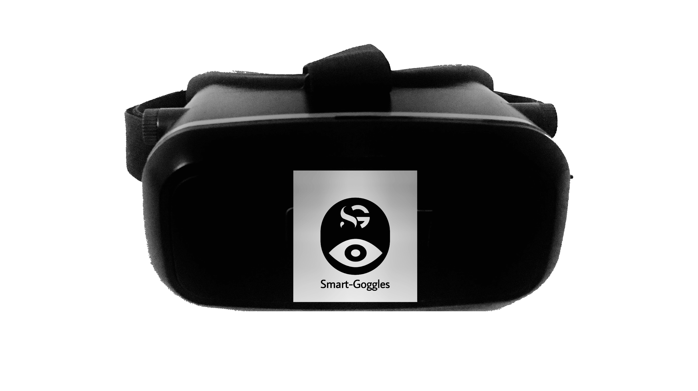
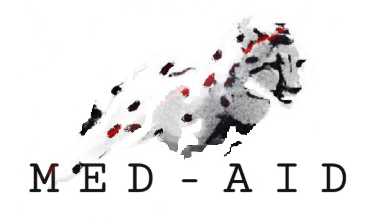

Los SmartGoggles son un auxiliar médico portátil no invasivo equipado con inteligencia artificial con la finalidad de mejorar el diagnóstico médico de vértigo y mareo.
Existe la necesidad de auxiliares médicos móviles y validados para el registro y evaluación de movimientos oculares. Es por esa razón que MED-AID aborda esta problemática de forma integral buscando innovar con la creación de soluciones tecnológicas simples, accesibles y de precisión diagnóstica.
